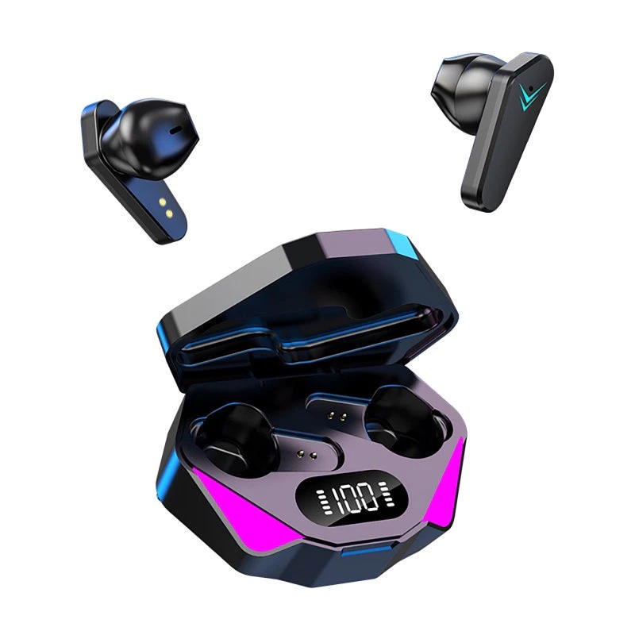
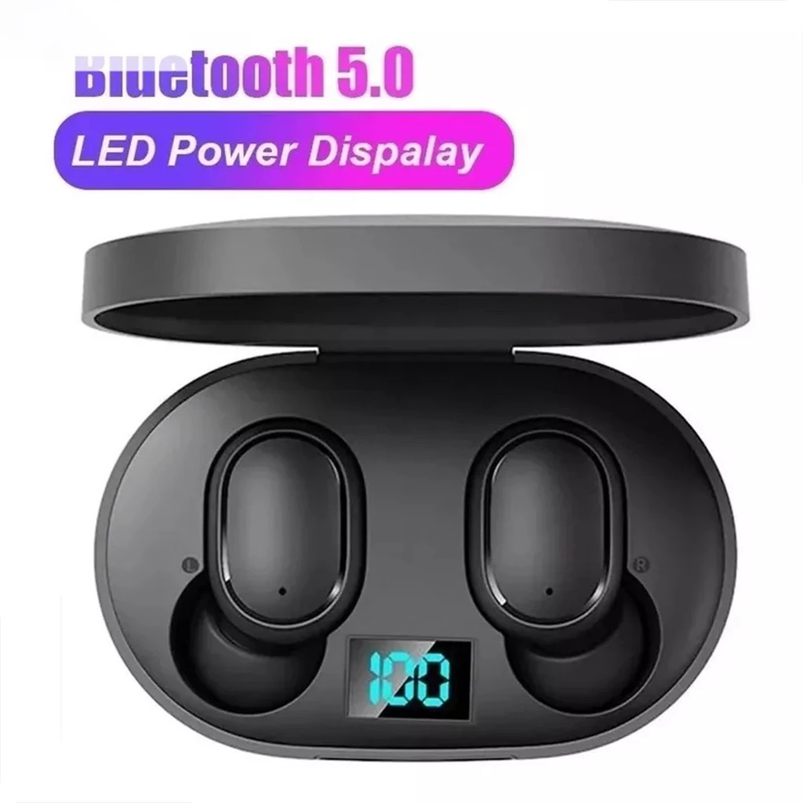
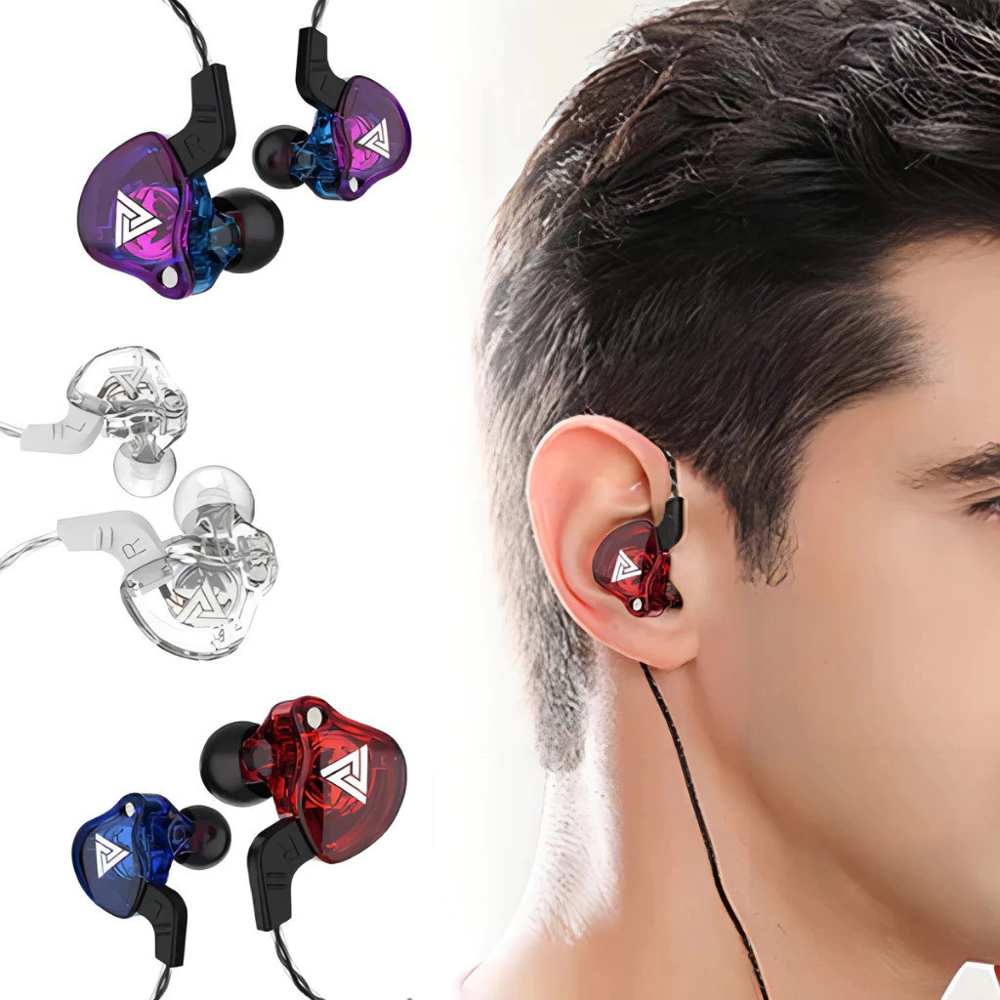

1. Fone Bluetooth TWS X15 – O Mais Vendido
- 🔊 Grave forte e bom volume
- 🔋 Bateria dura até 3–4 horas
- 🎤 Bom microfone para chamadas
- 💰 Faixa de preço: R$ 20–35
2. Fone A6S – O Mais Barato e Popular
- 💸 Excelente custo-benefício
- 🎶 Som equilibrado para uso no dia a dia
- ✔ Ideal para quem quer gastar pouco
- 💰 Faixa: R$ 20–30
3. Fone QKZ AK6 – Melhor Fio Até 50 Reais
- 🎧 Qualidade de som acima da média
- 🎼 Muito bom para ouvir música
- 🔨 Construção resistente
- 💰 Faixa: R$ 25–35
Como Escolher Fones Até 50 Reais
1. Tipo de uso
Se for para trabalho, prefira modelos com bom microfone. Para música, dê prioridade a resposta de grave.
2. Bateria
Nessa faixa de preço, a média é de 2 a 4 horas.
3. Conforto
Procure fones com borrachas adicionais e design ergonômico.
4. Avaliações
Modelos com mais de 4.5 estrelas e milhares de vendas são escolhas mais seguras.